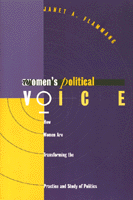

<body bgcolor="#FFFFFF" text="#000000" link="#0000FF" vlink="#CC0000" alink="#CC0000"><center><hr width="350" size="1" align="center" noshade>A new feminist approach to political science and politics<hr width="350" size="1" align="center" noshade><p><a href="https://cdcshoppingcart.uchicago.edu/Cart/ChicagoBook.aspx?ISBN=9781566395335&&PRESS=temple" target="_top">Buy this book!</a> | <a href="https://cdcshoppingcart.uchicago.edu/Cart/Cart.aspx?PRESS=temple" target="_top">View Cart</a> | <a href="https://cdcshoppingcart.uchicago.edu/Cart/Cart.aspx?PRESS=temple" target="_top">Check Out</a></p><p></p></center><!--none//--><h1>Women's Political Voice</h1>
<H2>How Women are Transforming the Practice and Study of Politics</H2>
<h3>Janet A. Flammang</h3>
<P>cloth 1-56639-533-X $74.50, Jun 97, <FONT COLOR=#990033>Out of Stock Unavailable</FONT>
<br>paper 1-56639-534-8 $36.95, Jun 97, <FONT COLOR=#990033>Available</FONT>
<br>Electronic Book 1-43990-590-8 $35.95 <FONT COLOR=#990033>Out of Stock Unavailable</FONT>
<BR> 480 pp
6x9
</P><p>Since the 1960's, academic and activist women have been challenging the conventional wisdom about political life and the study of politics. Organizing her book by standard political concepts&#151the mobilization and participation of the mass public; the recruitment, policy preferences, and political style of public officials; agenda-setting; and coalition-building&#151Janet Flammang subjects these concepts to a withering feminist critique based on the insights of feminist theory and the empirical evidence of hundreds of studies of women's distinctive politics.
<p>This book accomplishes four major tasks:<br>
<ul><li><p>It provides a comprehensive critical history of the changing research on politics and the changing nature of the political science discipline.
<li><p>It analyzes the course of women's political activism in the United States.
<li><p>It develops a rich case study of women's politics in Northern California's Silicon Valley, an area once nicknamed "the feminist capital of the nation."
<li><p>It examines coalitions and divisions within the women's movement with sensitivity to minority politics, as in the chapter subtitled, "The Hard Work of Sisterhood."</ul>
<p><i>Women's Political Voice </i>records the transformative politics of the women's movement and, simultaneously, urges political scientists to ask new questions and to adopt new methods.
<BR>&nbsp;<h2>Excerpt</h2><P>Excerpt available at <a href="http://www.temple.edu/tempress">www.temple.edu/tempress</a></p>
<BR>&nbsp;<h2>Contents</h2><P>
<p>Preface: The Puzzle of the Feminist Capital
<br>Acknowledgments
<p><b>Part I: Women's Political Voice in the Academy and the Community</b>
<br>1. Women's Political Voice in Political Science: The Women's Movement Challenges Conventional Wisdom in the Academy
<br>2. Women's Political Life in Santa Clara County: A Favorable Climate for Women's Political Activism
<p><b>Part II: Women and Mass Politics</b>
<br>3. Political Mobilization: Women's Shift from Individual to Group Consciousness and Activity
<br>4. Political Participation: Women's Civic Activity in Communities and the State
<p><b>Part III: Women and Elite Politics</b>
<br>5. Political Recruitment: Women's Distinctive Path to Public Office
<br>6. Policy Preferences and Political Style: Female Officials as Liberal Feminist Problem Solvers
<p><b>Part IV: Women and Elite-Mass Interaction</b>
<br>7. Agenda Setting: Women Bring New Issues to Public Attention
<br>8. Political Coalitions: The Hard Work of Sisterhood
<p>Notes
<br>Index
</P><BR>&nbsp;<H2>About the Author(s)</H2>
<table><tr><td valign="top"><img src="/tempress/authors/755_au.gif" height="90" width="75"></td><td width="100%" valign="middle"><p><B>Janet A. Flammang</B> is Associate Dean, College of Arts and Sciences, and Associate Professor of Political Science at Santa Clara University. She is the author or editor of two previous texts on U.S. politics.</P></td></tr></table>
<BR><H2>Subject Categories</H2>
<p><A HREF="/tempress/political.html" TARGET="_top">Political Science and Public Policy</a>
<BR><A HREF="/tempress/women.html" TARGET="_top">Women's Studies</a>
</p>
<BR><h2 class="inpageheading">In the series</H2>
<P><I><a href="http://www.temple.edu/tempress/women_political.html" onMouseOver="window.status='Click for other books in this series!'; return true;" onMouseOut="window.status=''; return true;" target="_top">Women in the Political Economy</a></i>, edited by Ronnie J. Steinberg.
</p><p>No longer active.<p><i>Women in the Political Economy</i>, edited by Ronnie J. Steinberg, includes books on women and issues of work, family, social movements, politics, feminism, and empowerment. It emphasizes women's roles in society and the social construction of gender and also explores current policy issues like comparable worth, international development, job training, and parental leave.</p>
<p align="center"><a href="https://cdcshoppingcart.uchicago.edu/Cart/ChicagoBook.aspx?ISBN=9781566395335&&PRESS=temple" target="_top">Buy this book!</a> | <a href="https://cdcshoppingcart.uchicago.edu/Cart/Cart.aspx?PRESS=temple" target="_top">View Cart</a> | <a href="https://cdcshoppingcart.uchicago.edu/Cart/Cart.aspx?PRESS=temple" target="_top">Check Out</a></p><p><font face="Arial" size="1"><a href="copyright.html" onMouseOver="window.status='Web Copyright Policy';return true;" onMouseOut="window.status=''" title="Web Copyright Policy">&copy;</a> 2015 <a href="http://www.temple.edu" target="new" onMouseOver="window.status='Link to Temple University home page';return true;" onMouseOut="window.status=''" title="Link to Temple University home page">Temple University</a>. All Rights Reserved. http://www.temple.edu/tempress/titles/755_reg.html</font></p>